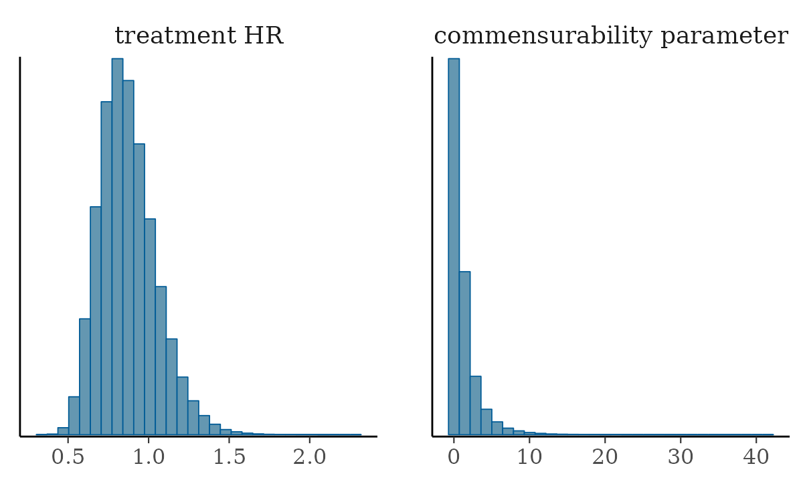
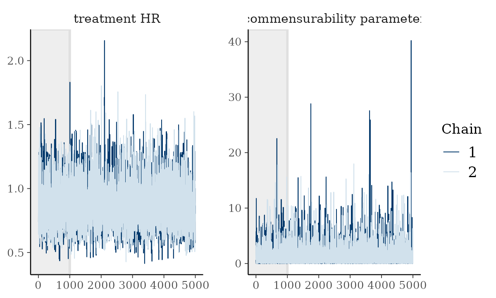

2. Conduct a hybrid control analysis on a dataset using BDB
Matt Secrest and Isaac Gravestock
dataset.RmdIn this vignette, you’ll learn how to conduct Bayesian dynamic
borrowing (BDB) analyses using psborrow2.
Before you start
The psborrows2 package relies on Stan for model fitting,
specifically via the CmdStan
and cmdstanr
tools.
If you haven’t used CmdStan before you’ll need to
install the R package and the external program. More information can be
found in the cmdstanr
vignette.
The short version is:
# Install the cmdstanr package
install.packages("cmdstanr", repos = c("https://mc-stan.org/r-packages/", getOption("repos")))
library(cmdstanr)
# Install the external CmdStan program
check_cmdstan_toolchain()
install_cmdstan(cores = 2)Now you’re ready to start with psborrow2.
library(psborrow2)Creating an analysis object
For a BDB analysis in psborrow2, we need to create an
object of class Analysis which contains all the information
needed to build a model and compile an MCMC sampler using Stan. To
create an Analysis object, we will call the function
create_analysis_obj(). Let’s look at the four required
arguments to this function and evaluate them one-at-a-time.
create_analysis_obj(
data_matrix,
outcome,
borrowing,
treatment
)1. data_matrix
Required elements
data_matrix is where we input the one-row-per-patient
numeric matrix for our analysis. The column names of the
matrix are not fixed, so the names of columns will be specified in the
outcome, treatment, and borrowing sections.
There are two columns required for all analyses:
- A flag denoting receipt of the experimental intervention
(
1) or not (0) - A flag denoting whether the patient was part of the external data
source (
1) or the internal trial (0)
Time-to-event
If the outcome is time-to-event, then two additional columns are needed:
- The duration of follow-up for each patient
- A flag denoting whether the patient was censored (
1) or not (0)
Binary endpoints
If the outcome is binary, one additional column is needed:
- A flag denoting whether a patient had the event of interest
(
1) or not (0)
Covariates
Covariates may also be included in BDB analyses. These should be included in the data matrix if the plan is to adjust for them.
Note Only numeric matrices are
supported. See Example data for creating
such a matrix from a data.frame.
Note No missing data is currently allowed, all values must be non-missing.
Example data
We will be using an example dataset stored in psborrow2
(example_matrix). If you are starting from a data frame or
tibble, you can easily create a suitable matrix with the
psborrow2 helper function
create_data_matrix().
Creating a data matrix with create_data_matrix()
# Start with data.frame
diabetic_df <- survival::diabetic
# For demonstration purposes, let some patients be external controls
diabetic_df$external <- ifelse(diabetic_df$trt == 0 & diabetic_df$id > 1000, 1, 0)
# Create the censor flag
diabetic_df$cens <- ifelse(diabetic_df$status == 0, 1, 0)
diabetes_matrix <- create_data_matrix(
diabetic_df,
outcome = c("time", "cens"),
trt_flag_col = "trt",
ext_flag_col = "external",
covariates = ~ age + laser + risk
)
# Call `add_covariates()` with `covariates = c("age", "laserargon", "risk") `
head(diabetes_matrix)
# time cens trt external age laserargon risk
# 1 46.23 1 0 0 28 1 9
# 2 46.23 1 1 0 28 1 9
# 3 42.50 1 1 0 12 0 8
# 4 31.30 0 0 0 12 0 6
# 5 42.27 1 1 0 9 0 11
# 6 42.27 1 0 0 9 0 11
psborrow2 example matrix
Let’s look at the first few rows of the example matrix:
head(example_matrix)
# id ext trt cov4 cov3 cov2 cov1 time status cnsr resp
# [1,] 1 0 0 1 1 1 0 2.4226411 1 0 1
# [2,] 2 0 0 1 1 0 1 50.0000000 0 1 1
# [3,] 3 0 0 0 0 0 1 0.9674372 1 0 1
# [4,] 4 0 0 1 1 0 1 14.5774738 1 0 1
# [5,] 5 0 0 1 1 0 0 50.0000000 0 1 0
# [6,] 6 0 0 1 1 0 1 50.0000000 0 1 0The column definitions are below:
-
ext, 0/1, flag for external controls -
trt, 0/1, flag for treatment arm -
cov1, 0/1, a baseline covariate -
cov2, 0/1, a baseline covariate -
time, positive numeric, survival time -
cnsr, 0/1, censoring indicator -
resp, 0/1, indicator for binary response outcome
2. outcome
psborrow2 currently supports three outcomes:
- Time-to-event with exponential distribution (constant hazard),
created with
exp_surv_dist() - Time-to-event with Weibull distribution and proportional hazards
parametrization, created with
weib_ph_surv_dist() - Binary endpoints with a Bernoulli distribution and using logistic
regression, created with
logistic_bin_outcome()
After we select which outcome and distribution we want, we need to
specify a prior distribution for the baseline event rate,
baseline_prior. In this case, baseline_prior
is a log hazard rate (for binary endpoints this represents the log odds
instead). Let’s assume we have no prior knowledge on this event rate, so
we’ll specify an uninformative prior:
normal_prior(0, 1000).
For our example, let’s conduct a time-to-event analysis using the exponential distribution.
outcome <- exp_surv_dist(
time_var = "time",
cens_var = "cnsr",
baseline_prior = normal_prior(0, 1000)
)
outcome
# Outcome object with class ExponentialSurvDist
#
# Outcome variables:
# time_var cens_var
# "time" "cnsr"
#
# Baseline prior:
# Normal Distribution
# Parameters:
# Stan R Value
# mu mean 0
# sigma sd 10003. borrowing
psborrow2 supports three different borrowing methods
which are specified in the method argument of
borrowing_details() (see the code example below how to call
it):
- “No borrowing”: This is the internal trial comparison without any external data
- “Full borrowing”: This is pooling of the external and internal control arms
- “BDB”: Bayesian dynamic borrowing
The column name for the external control column flag in our matrix is
also required and passed to ext_flag_col.
Finally, for BDB only, the hyperprior distribution on the
commensurability parameter must be specified. This hyperprior determines
(along with the comparability of the outcomes between internal and
external controls) how much borrowing of the external control group will
be performed. Example hyperpriors include largely uninformative inverse
gamma distributions e.g.,
gamma_prior(alpha = .001, beta = .001) as well as more
informative distributions e.g.,
gamma_prior(alpha = 1, beta = .001), though any
distribution on the positive real line can be used. Distributions with
more density at higher values (i.e., higher precision) will lead to more
borrowing. We’ll choose an uninformative gamma prior in this
example.
Note: Prior distributions are outlined in
greater detail in a separate vignette, see
vignette('prior_distributions', package = 'psborrow2').
borrowing <- borrowing_details(
method = "BDB",
ext_flag_col = "ext",
tau_prior = gamma_prior(0.001, 0.001)
)
borrowing
# Borrowing object using BDB
#
# External control flag: ext
#
# Commensurability parameter prior:
# Gamma Distribution
# Parameters:
# Stan R Value
# alpha shape 0.001
# beta rate 0.001
# Constraints: <lower=0>3. treatment
Finally, treatment details are outlined in
treatment_details(). Here, we first specify the column for
the treatment flag in trt_flag_col. In addition, we need to
specify the prior on the effect estimate, trt_prior. We’ll
use another uninformative normal distribution for the prior on the
treatment effect:
treatment <- treatment_details(
trt_flag_col = "trt",
trt_prior = normal_prior(0, 1000)
)
treatment
# Treatment object
#
# Treatment flag column: trt
#
# Treatment effect prior:
# Normal Distribution
# Parameters:
# Stan R Value
# mu mean 0
# sigma sd 1000Application
Now that we have thought through each of the inputs to
create_analysis_obj(), let’s create an analysis object:
anls_obj <- create_analysis_obj(
data_matrix = example_matrix,
outcome = outcome,
borrowing = borrowing,
treatment = treatment
)
# Inputs look good.
# Stan program compiled successfully!
# Ready to go! Now call `mcmc_sample()`.The Stan model compiled successfully and informed us that we are ready to begin sampling.
Sampling from an analysis object
We can take draws from the posterior distribution using the function
mcmc_sample(). This function takes as input our
Analysis object and any arguments (other than the
data argument) that are passed to CmdStanModel
objects. Note that running this may take a few minutes.
results <- mcmc_sample(anls_obj,
iter_warmup = 2000,
iter_sampling = 50000,
chains = 4,
seed = 112233
)
# Running MCMC with 4 sequential chains...
#
# Chain 1 finished in 21.6 seconds.
# Chain 2 finished in 22.6 seconds.
# Chain 3 finished in 23.7 seconds.
# Chain 4 finished in 19.6 seconds.
#
# All 4 chains finished successfully.
# Mean chain execution time: 21.9 seconds.
# Total execution time: 88.2 seconds.Summarizing results
As a CmdStanMCMC object, results has
several methods which are outlined on the cmdstanr
website. For instance, we can see a see a summary of the posterior
distribution samples with results$summary():
results$summary()
# # A tibble: 6 × 10
# variable mean median sd mad q5 q95 rhat ess_bulk
# <chr> <num> <num> <num> <num> <num> <num> <num> <num>
# 1 lp__ -1618. -1618. 1.50 1.29 -1621. -1.62e+3 1.00 71635.
# 2 beta_trt -0.156 -0.159 0.199 0.199 -0.480 1.76e-1 1.00 89655.
# 3 tau 1.21 0.507 1.91 0.693 0.00441 4.74e+0 1.00 81335.
# 4 alpha[1] -3.36 -3.35 0.162 0.162 -3.63 -3.10e+0 1.00 88895.
# 5 alpha[2] -2.40 -2.40 0.0554 0.0553 -2.49 -2.31e+0 1.00 130460.
# 6 HR_trt 0.873 0.853 0.177 0.168 0.619 1.19e+0 1.00 89655.
# # ℹ 1 more variable: ess_tail <num>The summary includes information for several parameter estimates from
our BDB model. Because it may not be immediately clear what the
parameters from the Stan model refer to, psborrow2 has a
function which returns a variable dictionary from the analysis object to
help interpret these parameters:
variable_dictionary(anls_obj)
# Stan_variable Description
# 1 tau commensurability parameter
# 2 alpha[1] baseline log hazard rate, internal
# 3 alpha[2] baseline log hazard rate, external
# 4 beta_trt treatment log HR
# 5 HR_trt treatment HRWe can also capture all of the draws by calling
results$draws(), which returns an object of class
draws. draws objects are common in many MCMC
sampling software packages and allow us to leverage packages such as
posterior and bayesplot.
draws <- results$draws()
print(draws)
# # A draws_array: 50000 iterations, 4 chains, and 6 variables
# , , variable = lp__
#
# chain
# iteration 1 2 3 4
# 1 -1616 -1620 -1617 -1617
# 2 -1618 -1623 -1620 -1616
# 3 -1619 -1618 -1619 -1617
# 4 -1619 -1616 -1618 -1618
# 5 -1619 -1618 -1618 -1619
#
# , , variable = beta_trt
#
# chain
# iteration 1 2 3 4
# 1 -0.30 -0.44 -0.00048 -0.1973
# 2 -0.21 -0.29 0.16970 -0.1398
# 3 -0.17 -0.26 -0.52943 -0.0031
# 4 -0.32 -0.12 -0.43633 -0.2337
# 5 -0.23 -0.17 -0.43633 0.0925
#
# , , variable = tau
#
# chain
# iteration 1 2 3 4
# 1 1.0410 0.650 0.048 2.445
# 2 2.4501 1.638 0.029 0.437
# 3 1.3336 3.267 2.406 1.552
# 4 0.0046 0.495 1.529 0.142
# 5 0.0108 0.064 1.529 0.044
#
# , , variable = alpha[1]
#
# chain
# iteration 1 2 3 4
# 1 -3.3 -3.3 -3.5 -3.4
# 2 -3.3 -3.2 -3.6 -3.3
# 3 -3.3 -3.3 -3.0 -3.4
# 4 -3.3 -3.4 -3.1 -3.5
# 5 -3.2 -3.5 -3.1 -3.4
#
# # ... with 49995 more iterations, and 2 more variablespsborrow2 also has a function to rename variables in
draws objects to be more interpretable,
rename_draws_covariates(). This function uses the
variable_dictionary labels. Let’s use it here to make the
results easier to interpret:
draws <- rename_draws_covariates(draws, anls_obj)
summary(draws)
# # A tibble: 6 × 10
# variable mean median sd mad q5 q95 rhat ess_bulk
# <chr> <num> <num> <num> <num> <num> <num> <num> <num>
# 1 lp__ -1.62e+3 -1.62e+3 1.50 1.29 -1.62e+3 -1.62e+3 1.00 71635.
# 2 treatment lo… -1.56e-1 -1.59e-1 0.199 0.199 -4.80e-1 1.76e-1 1.00 89655.
# 3 commensurabi… 1.21e+0 5.07e-1 1.91 0.693 4.41e-3 4.74e+0 1.00 81335.
# 4 baseline log… -3.36e+0 -3.35e+0 0.162 0.162 -3.63e+0 -3.10e+0 1.00 88895.
# 5 baseline log… -2.40e+0 -2.40e+0 0.0554 0.0553 -2.49e+0 -2.31e+0 1.00 130460.
# 6 treatment HR 8.73e-1 8.53e-1 0.177 0.168 6.19e-1 1.19e+0 1.00 89655.
# # ℹ 1 more variable: ess_tail <num>Using bayesplot
With draws objects and the bayesplot
package, we can create many useful visual summary plots. We can
visualize the marginal posterior distribution of a variable we are
interested in by plotting histograms of the draws with the function
mcmc_hist(). Let’s do that for the Hazard ratio for the
treatment effect and for our commensurability parameter, tau.

We can see other plots that help us understand and diagnose problems with the MCMC sampler, such as trace and rank plots:
bayesplot::color_scheme_set("mix-blue-pink")
bayesplot::mcmc_trace(
draws[1:5000, 1:2, ], # Using a subset of draws only
pars = c("treatment HR", "commensurability parameter"),
n_warmup = 1000
)
Many other functions are outlined in the bayesplot
vignettes.
Using posterior
draws objects are also supported by the
posterior package, which provides many other tools for
analyzing MCMC draw data. For instance, we can use the
summarize_draws() function to derive 80% credible intervals
for all parameters:
library(posterior)
summarize_draws(draws, ~ quantile(.x, probs = c(0.1, 0.9)))
# # A tibble: 6 × 3
# variable `10%` `90%`
# <chr> <num> <num>
# 1 lp__ -1620. -1616.
# 2 treatment log HR -0.409 0.101
# 3 commensurability parameter 0.0177 3.21
# 4 baseline log hazard rate, internal -3.57 -3.15
# 5 baseline log hazard rate, external -2.47 -2.33
# 6 treatment HR 0.664 1.11Another useful application of the posterior package is
the evaluation of the Monte Carlo standard error for quantiles of a
variable of interest:
vm <- extract_variable_matrix(draws, "treatment HR")
mcse_quantile(x = vm, probs = c(0.1, 0.5, 0.9))
# mcse_q10 mcse_q50 mcse_q90
# 0.000653 0.000654 0.001220posterior contains many other helpful functions, as
outlined in their vignettes.